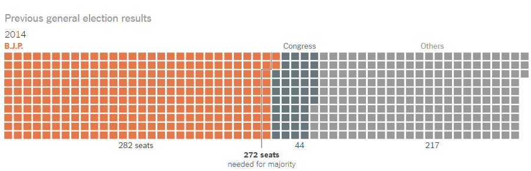

The Bharatiya Janata Party won the elections with a majority in the house. This win was after the Indian National Congress (INC)
were charged with instances of corruption.
Image 1: The New York Times - India Election 2019: A Simple Guide to the World’s Largest Vote, April 2019.